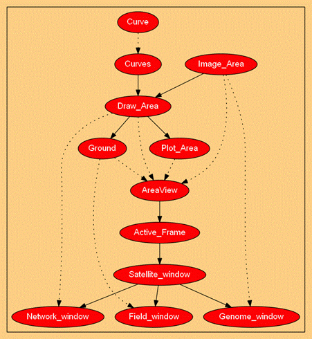
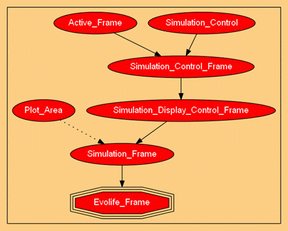

Evolife Jean-Louis
Dessalles
Telecom ParisTech
www.dessalles.fr
2. How to execute Evolife (+ download)
7. Create your
own Evolife scenario
8. Use Evolife’s
components separately (graphics, ecology, genetic algorithm)
4. Evolife classes
In the figure below, solid lines represent
inheritance links. Dotted lines indicate that a class is used in another. The
schema reveals the organization of Evolife in well-separated modules.

The first module is centred on Individual. An Individual inherits its genes
from Genome. Note that genes (defined in Genome) are logical segments located on
the DNA. Therefore Genome inherits
from DNA. Individuals have also a phenotype,
defined in Phenome. An individual remembers its social links,
which are stored in Alliances.
Individuals gather in groups (class Group), in which they interact and reproduce. Individuals may move from group
to group. Population defines a set of groups.
Storage, Base_Examiner, Examiner and Meta_Examiner are used to store numbers
(simulation results) and perform statistics.
Evolife_Observer is aware of the kind of data that are
processed (genomes, scores, …).
Any particular scenario should inherit from Default_Scenario (as indicated for Void_Scenario in the figure). Besides particular
functions defined in the scenario, Default_Scenario provides access to simulation
parameters (through inheritance from Parameters) and to the logical definition of genes on the DNA string (through
inheritance from Genetic_Map).
The following figures describe the organization
of the graphic modules.

The graphic module offers various windows that
are used to control and visualize simulations. Some of them can be easily reused
independently from Evolife (e.g. Image_Area, Draw_Area, Plot_Area, Ground). Plot_Area displays curves showing the
evolution of simulation results through time (e.g. average value of genes). Genome_Area displays the genome of all agents
in the population. Field_Area displays agents on a 2-D space. Network_Area displays social links between
agents.
In the logic of QT, areas (QT’s
scenes) require a view to be displayed. This is the role of the widget AreaView and its descendents. Active_Frame adds keyboard shortcuts, so that
the same keyboard actions will be available from any Satellite_window (windows that display genomes,
trajectories, field, …).
The next figure illustrates the organization of
the control windows, which constitutes the fifth and last module (the new
classes are defined in Evolife_Window.py).

Evolife’s main
window is Evolife_Frame. The class Evolife_Batch is an alternative to it, which can be used in batch
mode when no display is wanted. Simulation_Control offers an interface with Simulation (the simulation thread, when used
(not used in the 2012 version)). Simulation_Control_Frame offers control buttons, such as
[Run] and [Step]. Simulation_Frame adds a graphic zone that displays
curves. It can be reused in other programmes. Evolife_Frame inherits from it, adding concepts
such as a genome window or a trajectory window, which are specific to Evolife.
2. How to execute Evolife (+ download)
7. Create your
own Evolife scenario
8. Use Evolife’s
components separately (graphics, ecology, genetic algorithm)
Evolife
Jean-Louis Dessalles
Telecom ParisTech
www.dessalles.fr